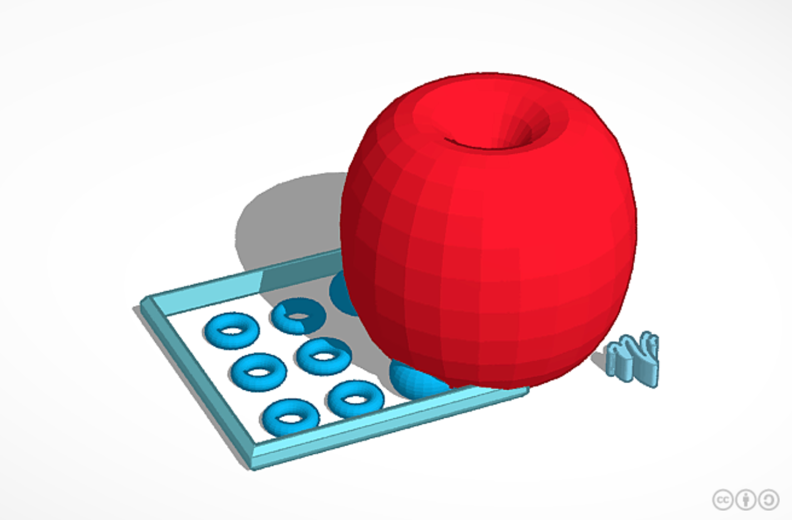

<b><center><marquee>AMIRA'S WEBSITE</marquee></center></b>
<br><html><b><b>JOURNAL 1!<b></b></html>
<br><b>Week 1</b><br>
<u>This week, we started using CAD. We played around with it on the first day. On the second day, we created an appliance.</html></u>

<br> <br>
<br>Week 2<br>
<br><u>This week, we started working on our rub-goldberg machine.First, we created a three- d model of the machine, then sketched it out on a cardboard sheet. Today, we did a boat challenge with paper.</u>
<br><br>
<br> Week 3<br>
<br><u>This week, we built our rub goldberg machine. We created all the parts out of cardboard so that the machine would pop the balloon. We finished the machine and tested it out. it took a few tries to pop the balloon, because the needle wasn't sharp enough. We changed the needle after a few tries and the balloon sucessfully popped. The machine consisted of a ramp with a pully system. The pully system held marbles, so when it was activated, the marbles would roll down the ramp onto a sea saw, which had a needle on the other end that popped the balloon.</u><br>

<br><br>
<br>Week 4<br>
<br>This week, we were given a project. We had to disassemble a pc computer and put it back together. We were given tools and a slide to use. <br>
<br><br>
<br><br>